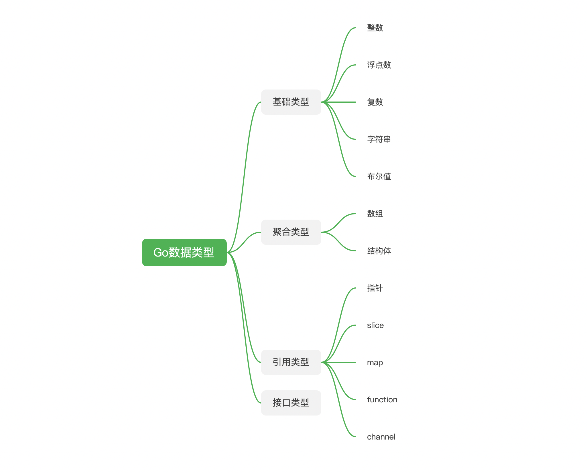

一文看懂 Go 的数据类型
每一门语言都有自己的数据结构，Go 语言也不例外，总共有四大类，基础类型、聚合类型、引用类型和接口类型。本文简单介绍一下这些类型。

1. 基础类型
整型
Go 的整型分为有符号和无符号整数。
有符号整数会分成 int8、int16、int32、int64
无符号整数会分成 uint8、uint16、uint32、uint64
但通常会直接使用 int 和 uint，因为这两种类型会根据平台的特性，自动转成运算效率最高的类型，现在 32 位以下的计算机一级很少见了，所以 int 通常是 32 或者 64位，但具体要根据平台和编译器决定。
int 是目前使用最广泛的数值类型，在需要明确指定数值位数的时候，直接使用 int 就可以。
通常来说，有符号的整数就够用，无符号整数只有在位运算或者特定算数的时候才会使用。
uintptr 和 rune 是两类特殊的数字类型，uintptr 大小不明确，用来存储指针，主要用于底层编程，比如用于 Go 语言与 C 语言的交互。
如果两个值可以使用 == 和 != 进行比较，说明这个两个值是可比较的。
整数是可比较的。
其他数字类型
除了整型数据之外，Go 语言中，还有两种数据类型：浮点数和复数。
浮点数有 float32 和 float64 两种类型，浮点数一般使用指数表示法，使用 e 或者 E 来表示。
float32 的正数范围是 1.4e-45 ~ 3.4e38
float64 的正数范围是 4.9e-324 ~ 1.8e308
在 10 进制下，float64 的有效数字是 15 位，远远超过了 float32 的 5 位，如果没有特殊的情况，应该优先使用 float64。
复数也有两种 complex64 和 complex128，这两种类型分别由 float32 和 float64 构成。math/cmplx 库提供了复数运算所需要的函数。
浮点数和复数都是可比较的。
字符串
字符串可是说是最常用的数据类型。字符串由不可变的字节序列（[]byte）构成，字符串的内容通常会用 UTF-8 的编码格式处理，这点在上一篇文章中已经详细的说明过了。
Go 的字符串内容是不可变的，对当前字符串做的操作都会生成一个新的字符串。Go 字符串天然支持 UTF-8，而且习惯上也会优先使用这种编码方式，乱码的烦恼会少一些。
Go 语言也为字符串提供了丰富的类库：
- bytes：用于操作字节slice（[]byte），如果需要对字符串进行频繁的修改， 使用 byte.Buffer 会高效
- strings：用于搜索、替换等等字符传操作
- strconv：主要用于字符串和其他基本数据类型之间的转换
- unicode：用来判断字符的特性，比如是否是数字、是否大写等等
字符串是可比较的。
布尔值
布尔值相对来说比较简单，只有两个值： true 和 false。可以使用 ! 符号来进行取反运算，!true 就是 false。
也可以使用 && 和 || 来进行组合运算，在组合运算中，也会遵循短路行为，短路行为是指左边如果能直接确定最后的结果，那么后面的计算将不会进行，如下:
var i = 1
// i < 100 代码就不会被执行
if i > 0 || i < 100 {
fmt.Printf("result %+v", i)
}
布尔值是可比较的。
2. 聚合类型
聚合类型的值由内存中的一组变量构成。数组和结构体都是聚合类型，数组和结构体的长度都是固定的。数组中的的元素类型必须都相同，而结构体中的元素可以不同。
数组
数组是一个长度固定，拥有0 个或多个（不超过数组长度）相同数据类型的序列。数组在声明的时候必须指定长度，可以使用常量，但是不能使用变量。
实际上，我们很少在代码中直接使用数组，数组在绝大部分的时候都是做为 slice 的底层存储，并不会直接使用。
数组的可比较性取决于元素的可比较性，如果元素是可比较的，那么数组也是可比较的，反之亦然。
结构体
结构体是由任意个任意类型的变量组合在一起的数据类型，和其他语言中类的概念相似。
type Student struct {
Name string
age int
}
Go 语言是一个面向对象的语言，但却又抛弃了 Java 中类和对象的概念，结构体是 Go 语言实现面向对象的基础之一，还有一部分是接口，下面会聊到。
在 Go 的面向对象中，已经摈弃了继承的概念，但在结构体中，通过结构体嵌套，也算是实现了部分继承的功能。
结构体的可比较性也取决于其中变量的可比较性。
3. 引用类型
引用是另外一种数据类型，很多 Go 语言的高级功能都依赖引用。引用都间接指向变量或者状态，通过引用来操作数据会让该数据的全部引用都受影响。
指针
指针是一种数据类型，指针的值是一个变量的地址。对于一个变量来说，可以有多个指针，通过其中任意一个指针来修改数据，通过其他指针也会获取到最新修改的值。
i := 1
p1 := &i
p2 := &i
*p1 = 2
fmt.Println(*p2) // 2
指针是可比较的。
slice
slice 是一个拥有相同元素的可变长度序列。 slice 看起来与数组很像，但本质上不同。
slice 依赖数组，没有数组，就没有 slice。
一个 slice 有三个属性，指针，长度和容量。其中指针指向数组中的某个元素（不一定是第一个），这是 slice 可以访问的第一个元素。
长度是 slice 中元素的个数，不能超过容量，容量通常是指 slice 指针的位置，到底层数组的最后一个元素的位置的长度。
slice 不可比较， 只能和 nil 比较。
map
map 是散列表的引用。
map 的使用很简单，但是需要注意一点，map 的 key 必须是可比较的，如果 key 不可比较，那就无法通过 key 查询到响应的 value，value 的类型是没有限制的，可以是任意值。
map 不可比较，只能和 nil 比较。
function
function 就是函数，在写 Go 的 helloworld 程序时，就会用到函数。 函数也是一种引用类型。
function 本身不可比，只能和 nil 比较，但是可以通过反射获取函数指针进行比较。
channel
Go 语言天然支持搞并发。而 channel 就是其中关键一环，goroutine 用来并发执行任务。而 channel 则用来连接不同的 goroutine。channel 也是属于引用类型。
channel 是可比较的。
4. 接口类型
Go 语言中还有一个类型是接口类型。
接口是 Go 实现面向对象的关键。Go 的接口类型很特别，你不需要去显示的实现一个接口，只要把接口中的方法实现，就默认实现了这个接口。
接口类型是可比较的。
5. 小结
Go 的数据类型设计简洁，但扩展性很好，开发者可以根据自己的需要动态的扩展数据，不只是对于结构体这种聚合数据类型，即使对于基础数据类型，也可以根据的需要进行扩展。另外 Go 自带对 JSON、xml 以及 Protocol Buffer 的支持，不需要引入外部的库，这就使得写程序时会很轻量级，可以尽可能少的引入依赖包。
文 / Rayjun